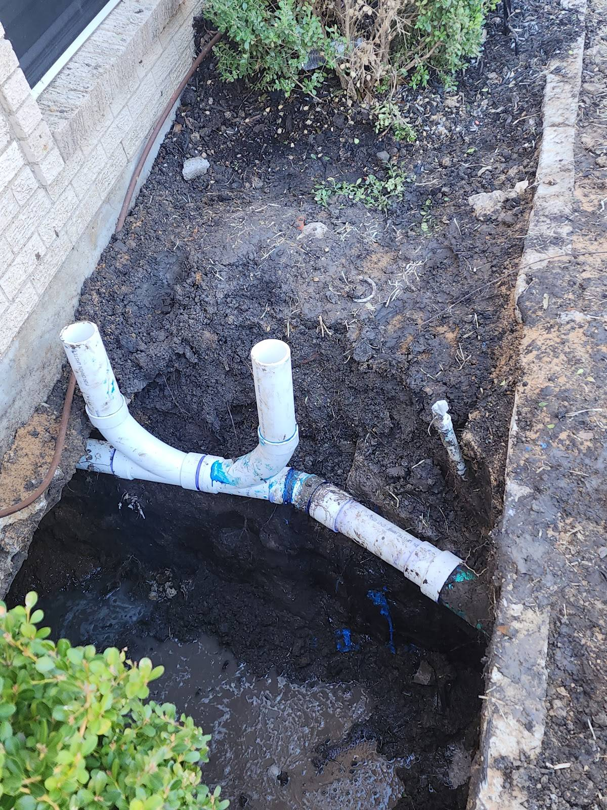
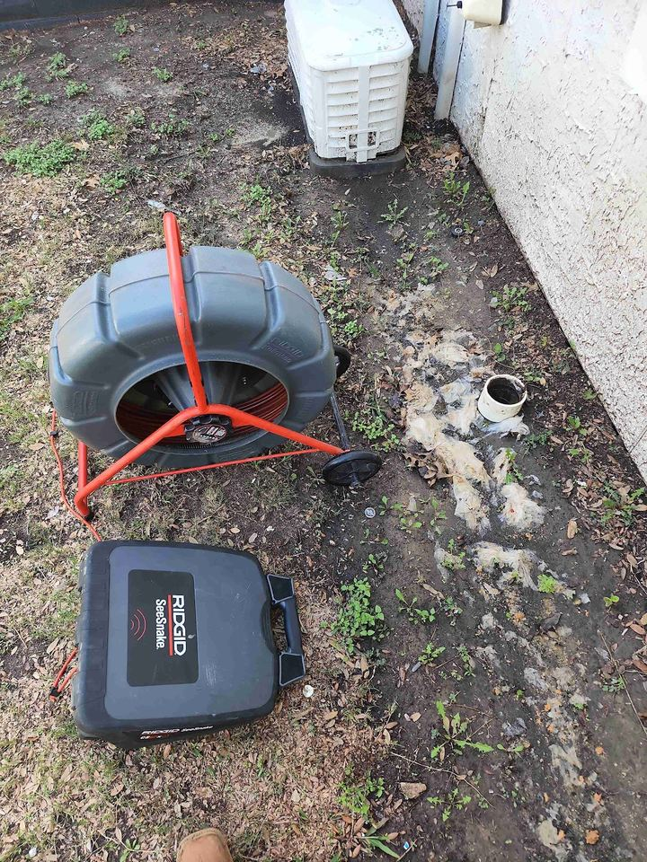
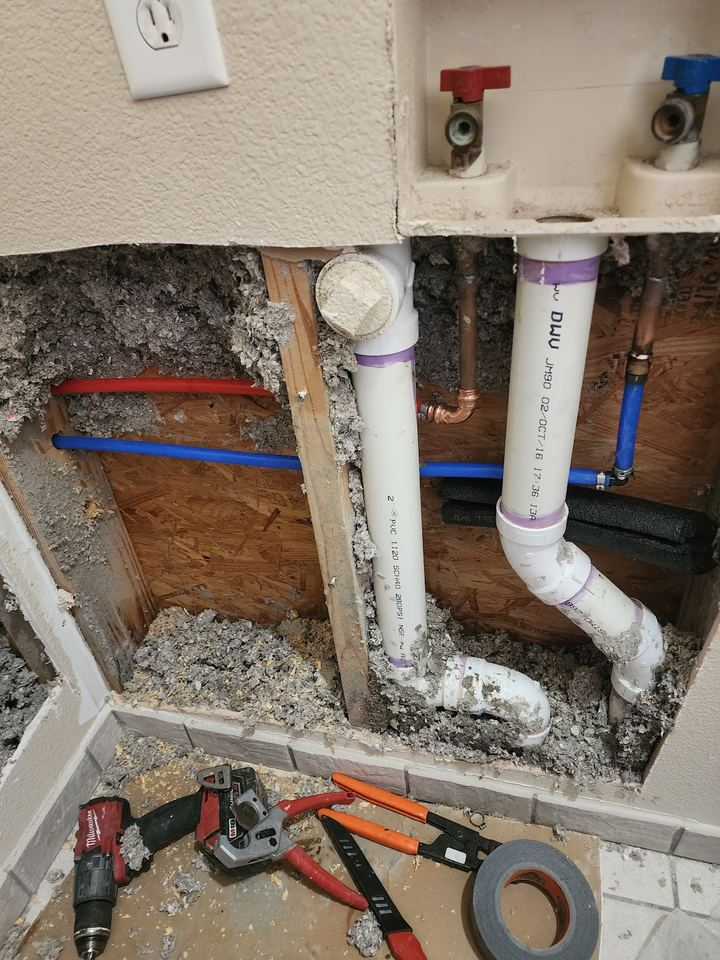
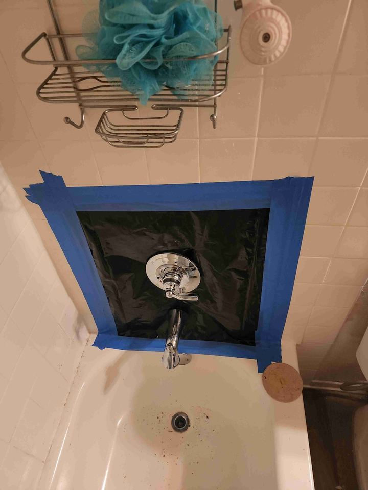
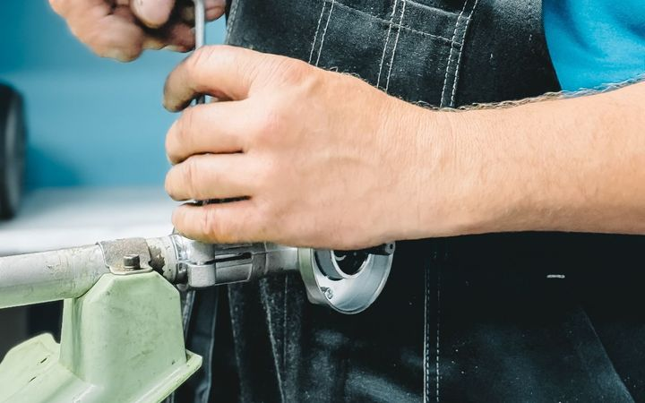
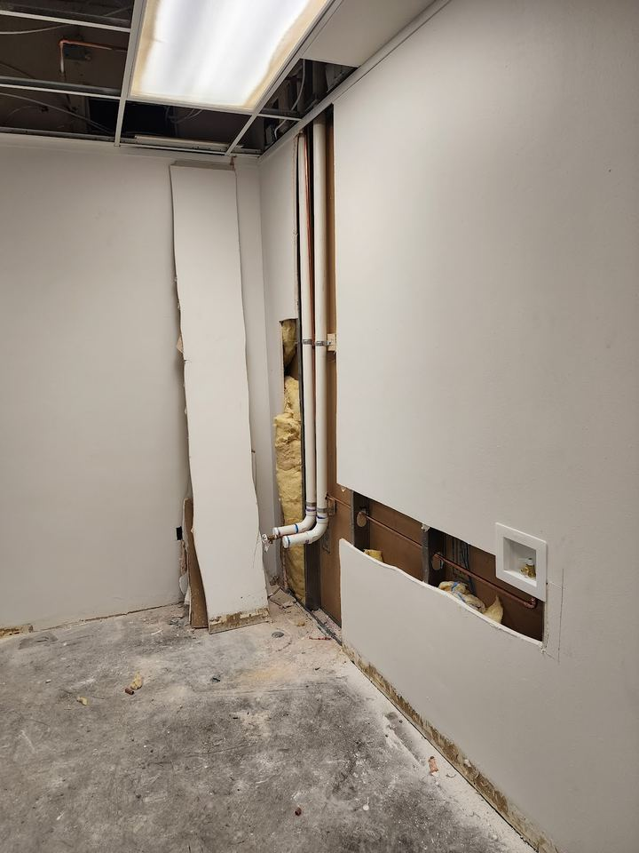
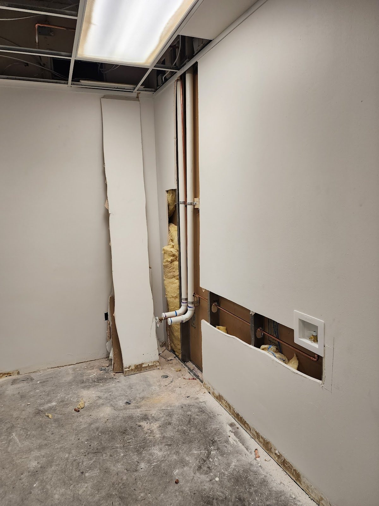
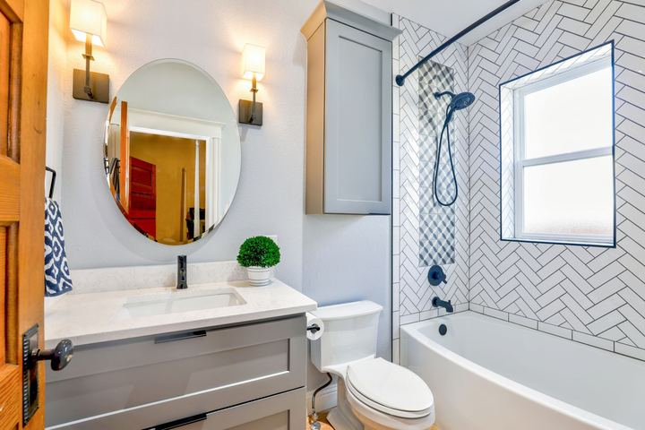
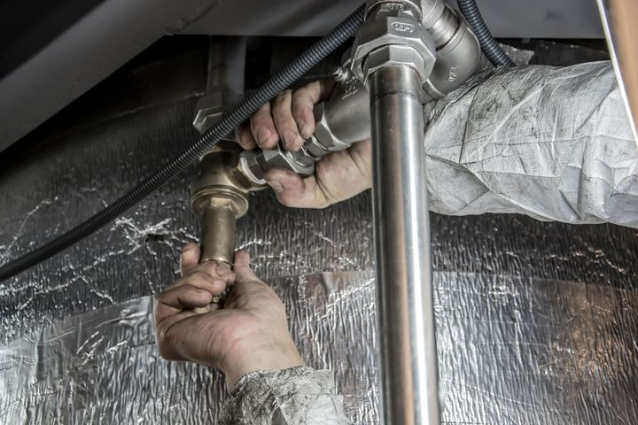

FT 056Sewer & drain line repair
When the line under the yard has failed, it is dug out and replaced: new PVC, a Y-fitting and a cleanout riser.
North Richland Hills, TX · Fort Worth / Mid‑Cities
We see the problem. Then we fix it.
Leaks inside walls, slow drains, failed sewer lines, shower valves, plus excavation and concrete work. The wall gets patched afterwards.

Services
Six kinds of plumbing work, plus excavation and concrete. The FT marker on each one is how far down the line the camera would be.

FT 056When the line under the yard has failed, it is dug out and replaced: new PVC, a Y-fitting and a cleanout riser.

FT 012Leaking supply and drain pipes found, cut out and replaced. Red PEX hot, blue PEX cold.
Slow and stopped drains cleared with a drain machine.

FT 004Dripping or stiff valves reached through a small opening in the tile.

FT 001Drips, leaks and fittings that stopped doing their job.

FT 000The wall opened to reach a pipe or valve is patched afterwards.
Excavation & concrete
Pro Commercial Services does commercial plumbing, excavation and concrete. When a sewer or drain line under the ground has failed, the camera goes in first, then the trench is dug and the line is replaced.

How a visit goes
Most leaks and bad valves hide behind tile or drywall. A visit goes in four steps, and the last one is closing the wall back up.
Find where the water or the blockage really is: in the wall, behind the tub, or down the line.
You hear what is wrong and what the fix involves before anything gets cut.
The pipe, valve or line is repaired or replaced.
The opening in the drywall is patched once the plumbing is done.
Where and what
Commercial plumbing, excavation and concrete, plus repairs in homes. Based in North Richland Hills, TX 76182. These are their own job photos.
Questions
Straight answers to what people ask most about drains, leaks, camera inspections and bigger jobs.

A single slow drain is usually a clog near the fixture. Clear any hair or debris you can see at the stopper or strainer. If more than one drain is slow, the blockage may be further down the line. Call or text (682) 297-9054 and say which drains are affected.
Turn off the water at the nearest shut-off valve or at the main, then get in touch. A section of drywall is opened to reach the pipe, the leak is repaired, and the opening is patched afterwards. Text photos of any water stains to (682) 297-9054.
A small camera on a flexible cable is fed into the drain or sewer line through a cleanout. The video shows the inside of the pipe, so a clog, a crack or roots can be seen instead of guessed at before deciding on a repair.
Yes. Pro Commercial Services does commercial plumbing, excavation and concrete. Call or text (682) 297-9054 and describe the job, with a photo of the site if you can.
Yes. Drywall patching after plumbing work is one of the services, so a wall opened to reach a pipe or valve does not have to stay open.
Contact
A picture of the drip, the stain, the backed-up drain or the job site says more than a description. Send it with your city or ZIP, or call and talk it through.

Sending opens your own email app with this filled in, addressed to procommercialservicesllc@gmail.com. Nothing is sent until you press send there.